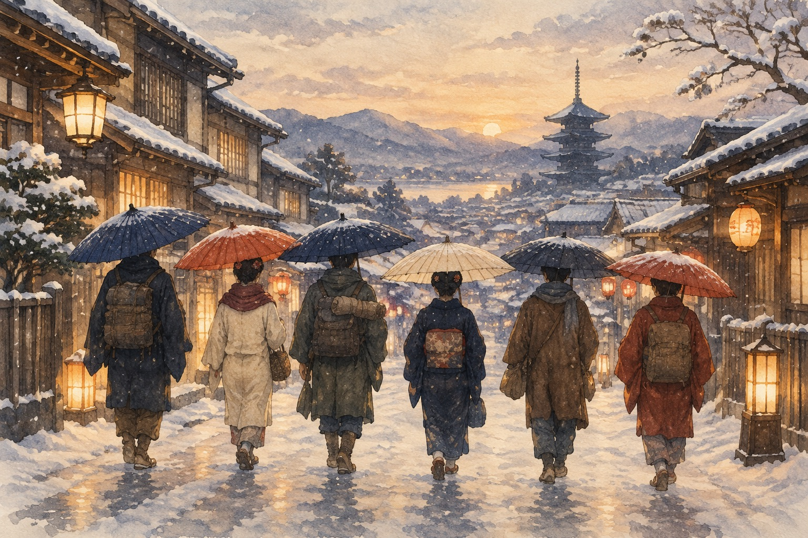

<template>
<link rel="stylesheet" href="../../assets/base.css">
<style>
@font-face{font-family:GenSekiGothic;src:url('../../assets/fonts/GenSekiGothic2TW-B.subset.woff2') format('opentype');font-weight:700}
#root{position:absolute;inset:0;width:100%;height:100%;overflow:hidden}
#root,#root *{font-family:GenSekiGothic,sans-serif;font-weight:700}
.dayrail{position:absolute;left:1050px;top:153px;width:784px;height:42px;display:flex;gap:18px;align-items:center;font-size:24px;line-height:1;z-index:5}
.dayrail span{width:80px;border-bottom:3px solid var(--line);padding:0 0 9px;color:var(--muted)}
.dayrail span.past{border-color:var(--ink)}
.dayrail span.today{color:var(--accent);border-color:var(--accent)}
.bg{position:absolute;inset:0;overflow:hidden;background:var(--ink)}
.bg img{width:100%;height:100%;object-fit:cover;display:block}
.shade{position:absolute;inset:0;background:linear-gradient(90deg,rgba(17,40,52,.86) 0%,rgba(17,40,52,.55) 42%,rgba(17,40,52,.05) 72%)}
.stops{position:absolute;left:96px;top:170px;display:flex;gap:14px;align-items:center;color:#F4F0E7;font-size:34px}
.stops i{font-style:normal;color:#F2B9A4}
.l1,.l2{position:absolute;left:92px;color:#F4F0E7;font-size:70px;line-height:1.25}
.l1{top:300px}.l2{top:400px}
.l2 b{color:#F2B9A4}
.ours{position:absolute;left:96px;top:575px;color:#F2D3A8;font-size:34px;letter-spacing:4px}
.go{position:absolute;left:96px;top:650px;color:#F4F0E7;background:var(--accent);font-size:56px;padding:12px 34px;border-radius:6px}
</style>
<div id="root" data-composition-id="12-closing" data-duration="14.78" data-width="1920" data-height="1080"><div class="scene">
<div class="bg"></div><div class="shade"></div>
<p class="stops"><span id="st0">境港・妖怪街</span><i id="sa0">→</i><span id="st1">城崎・溫泉</span><i id="sa1">→</i><span id="st2">倉敷・運河</span></p>
<p class="l1" id="cl1">把想看的風景排進來</p>
<p class="l2" id="cl2">也把冬天需要的<b>餘裕</b>留下來</p>
<p class="ours" id="co">我們的八天七夜・2027.01.11 — 01.18</p>
<p class="go" id="cg">準備一起出發</p>
</div></div><script>(()=>{
const C=window.TL.scenes['closing'];const D=C.duration;const q=i=>C.clauses[i].at;const tl=gsap.timeline({paused:true});
const up=(s,a)=>tl.fromTo(s,{y:22,opacity:0},{y:0,opacity:1,duration:.7,ease:'power3.out'},a);
tl.fromTo('#bgi12',{scale:1.08,xPercent:2},{scale:1,xPercent:0,duration:D,ease:'none'},0);
up('#st0',Math.max(.3,q(0)));up('#sa0',q(1)-.1);up('#st1',q(1));up('#sa1',q(2)-.1);up('#st2',q(2));
up('#cl1',q(3));up('#cl2',q(4));up('#co',q(5));
tl.fromTo('#cg',{scale:.85,opacity:0},{scale:1,opacity:1,duration:.7,ease:'back.out(1.6)'},q(6));
tl.to({},{duration:D},0);
window.__timelines['12-closing']=tl;
})();</script></template>
